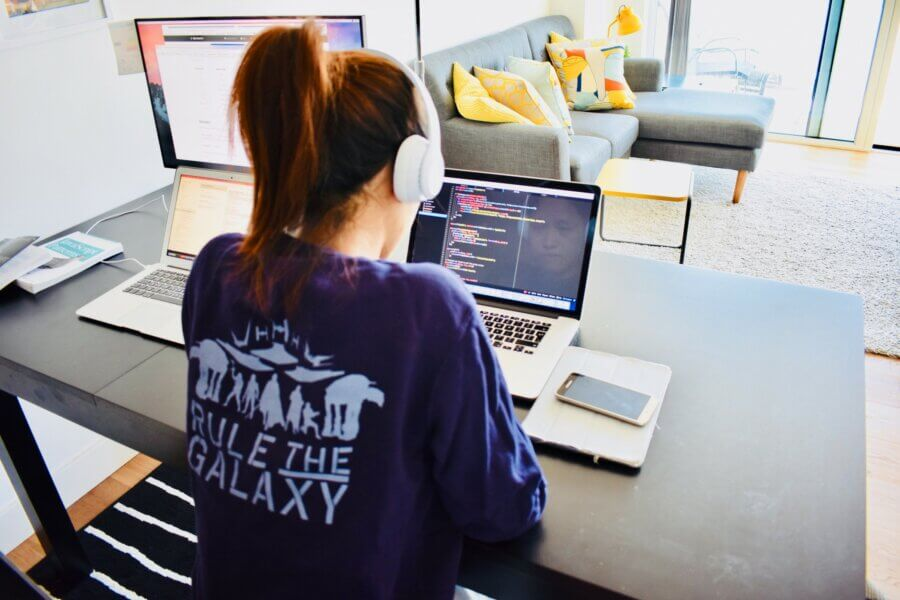
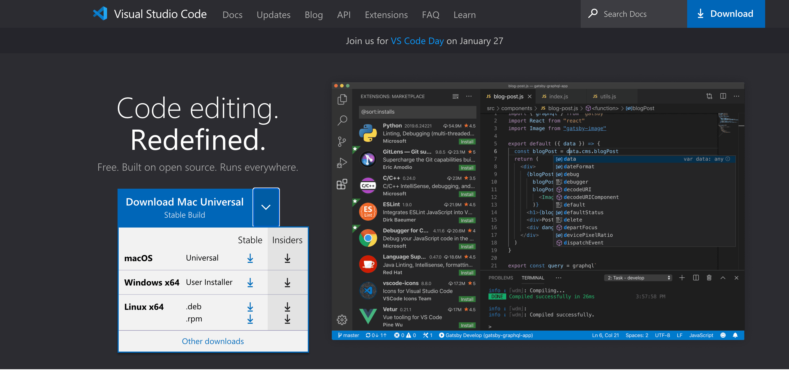
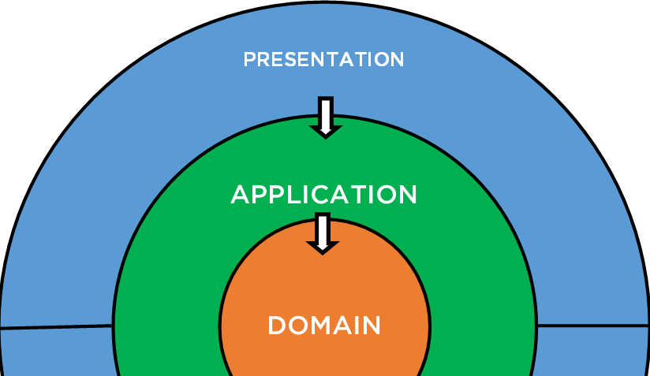
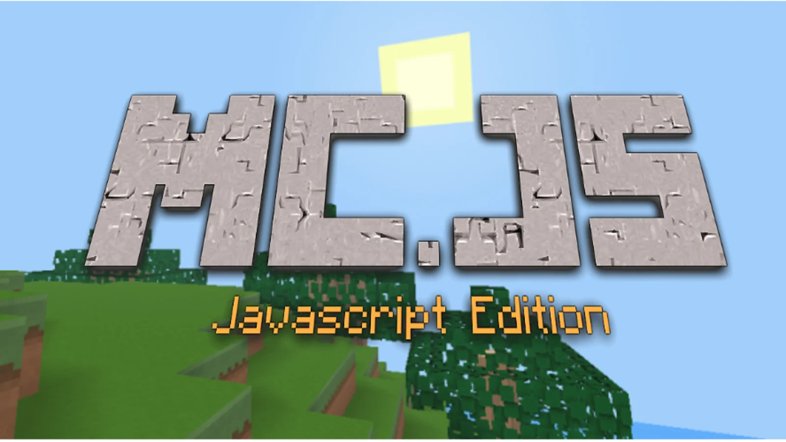
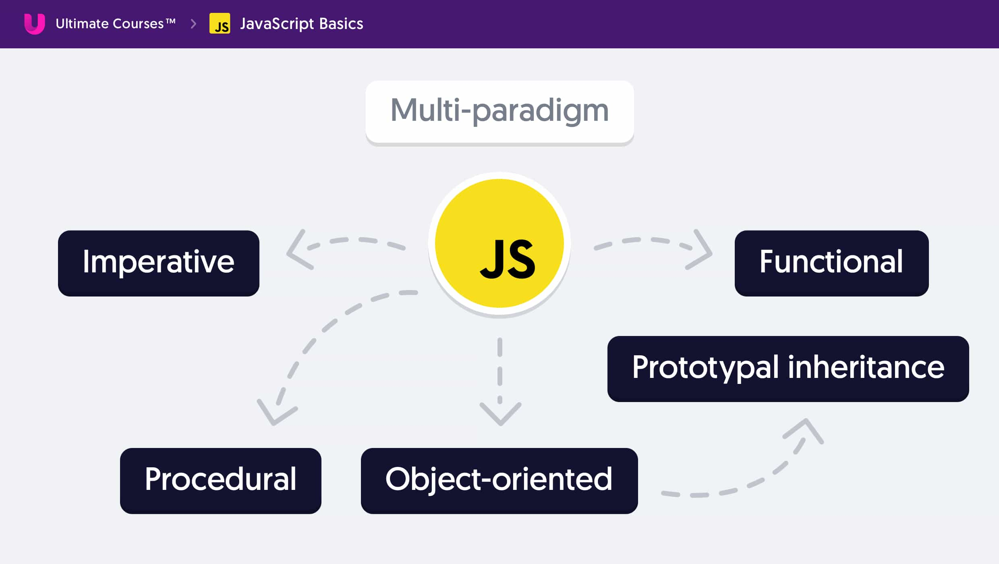

Фронтенд — это клиентская часть продукта (интерфейс, с которым
взаимодействует
пользователь). В случае с сайтом, её формирует и выводит на экран браузер, который работает с HTML, CSS
и JavaScript.
Технологии фронтенда — везде!
-
Верстка
Разработка статических сайтов.
-
HTML/CSS/JS

-
Фронтенд
Разработка веб-приложений (присутствует бизнес-логика).
-
HTML/CSS/JS/React/Vue/Angular/TypeScript
-
Фулстек
Разработка фронтенда и бэкенда приложения.
-
HTML/CSS/JS/React/Vue/Angular/TypeScript/Node.js/Deno

-
Мобильные приложения
Нативные мобильниые приложения на движках веба.
-
React Native/Flutter/Cordova/Ionic

-
Десктопные приложения
Нативные декстопные приложения на движках веба.
-
Electron/React Native

-
JS-разработка
Работа над логикой и архитектурой приложения.
-
JavaScript/TypeScript/Rescript

-
2D и 3D игры
Работа над логикой и архитектурой приложения.
-
Pixi.js/Babylon.js
-
3D в браузере
Работа с 3D в браузере.
-
Three.js/D3.js/Babylon.js
-
Железяки
Программирование микроконтроллеров и IoT.
-
Cylon.js/Favor/IoT.js
-
Доступность
Внедрение, поддержание, аналитиз доступности приложения
-
Cylon.js/Favor/IoT.js

JS мультипарадигменный 🍭
Middle title. Is aligned on the left side